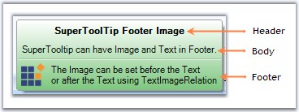
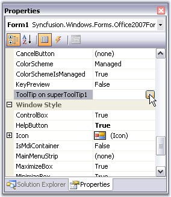
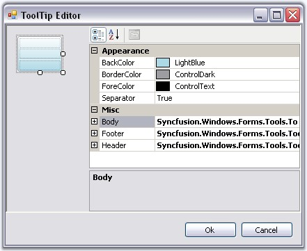

In Office 2007, Microsoft has introduced a SuperToolTip control to display the tooltip. Essential Tools has also come up with a new control known as the SuperToolTip which, enables the user to give tooltip information.

Figure 1444: SuperToolTip with Three ToolTip Item
· Header - The Header is used to display text which is used as a header for the tooltip.
· Body - This is the description part.
· Footer - If additional information is needed, it can be entered in the footer part.
Creating SuperToolTip Through Designer
1. Drag and drop the SuperToolTip on your form.
2. When the SuperToolTip component is added to a form, an extended property will be added to the properties of every item in the toolstrip or tabitem in the RibbonControlAdv.

Figure 1445: SuperToolTipExtended Property of a Form
 Note: You can also get or set a tooltip
programmatically. It is discussed here.
Note: You can also get or set a tooltip
programmatically. It is discussed here.
3. Clicking the … ellipse button will show the ToolTip Editor Dialog Box. This editor lets you customize the ToolTip items.

Figure 1446: ToolTip Editor
Through Code
|
[C#]
using Syncfusion.Windows.Forms.Tools;
private SuperToolTip superToolTip1; this.superToolTip1 = new Syncfusion.Windows.Forms.Tools.SuperToolTip(this); //Adding ToolTip Header Item Syncfusion.Windows.Forms.Tools.ToolTipInfo toolTipInfo1 = new Syncfusion.Windows.Forms.Tools.ToolTipInfo(); toolTipInfo1.Header.Text = "Cut"; toolTipInfo1.Header.TextAlign = System.Drawing.ContentAlignment.TopCenter;
//Associating SuperToolTip for ToolStripTabItem this.superToolTip1.SetToolTip(this.toolStripTabItem1, toolTipInfo1); |
|
[VB.NET]
Imports Syncfusion.Windows.Forms.Tools
Private superToolTip1 As SuperToolTip Me.superToolTip1 = New Syncfusion.Windows.Forms.Tools.SuperToolTip(Me) 'Adding ToolTip Header Item Dim toolTipInfo1 As New Syncfusion.Windows.Forms.Tools.ToolTipInfo() toolTipInfo1.Header.Text = "Cut" toolTipInfo1.Header.TextAlign = System.Drawing.ContentAlignment.TopCenter
//Associating SuperToolTip for ToolStripTabItem Me.superToolTip1.SetToolTip(this.toolStripTabItem1, toolTipInfo1) |
 Supporting SuperTooltip for .NET Controls
Embedded in MFC Containers
Supporting SuperTooltip for .NET Controls
Embedded in MFC Containers